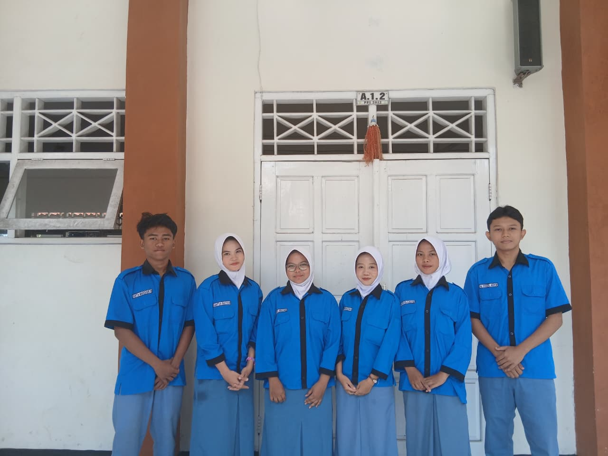
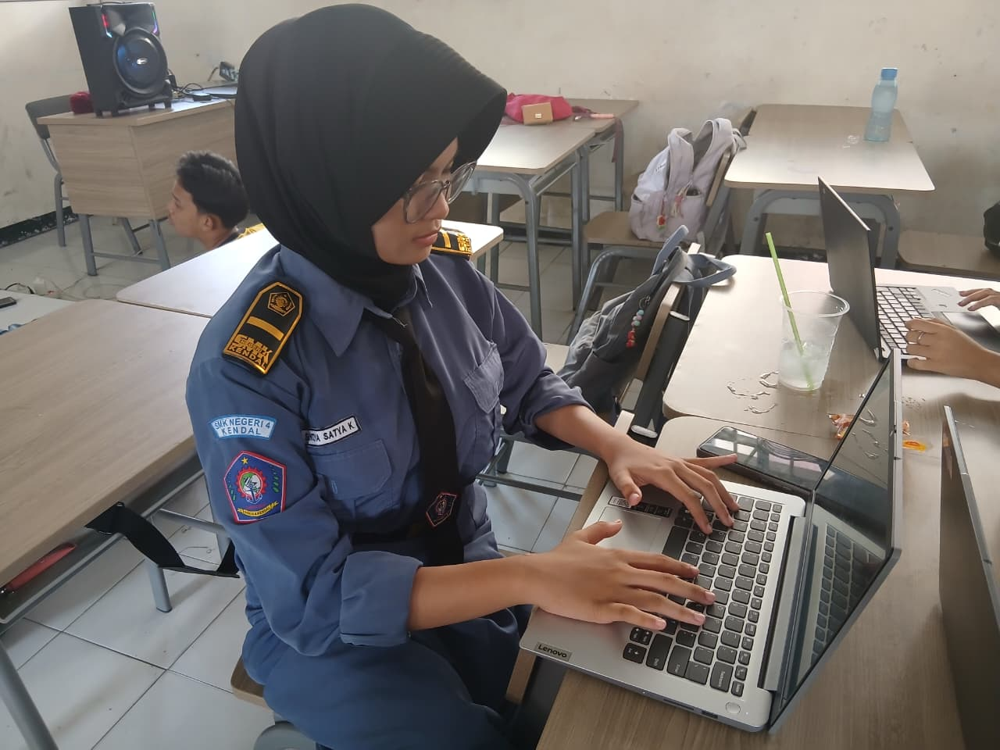
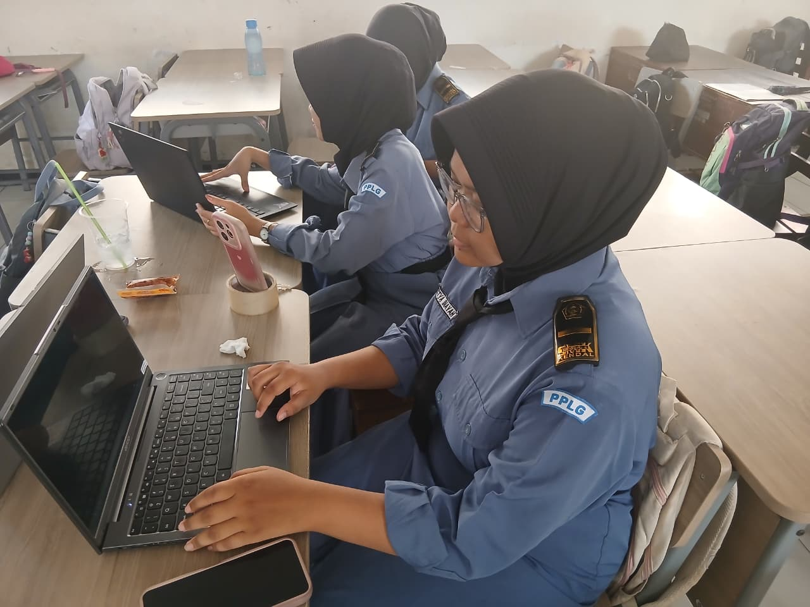
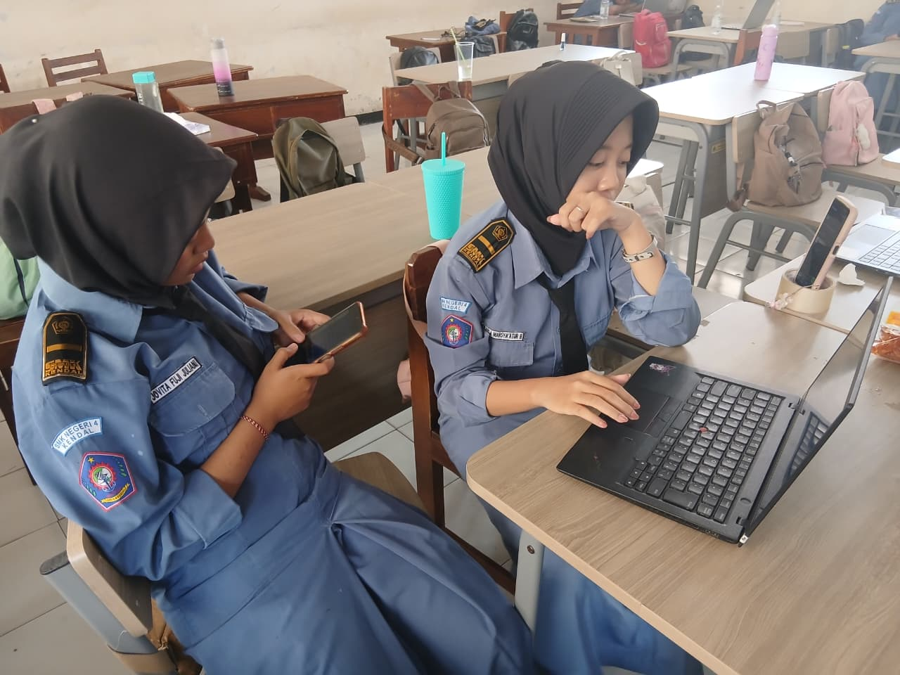
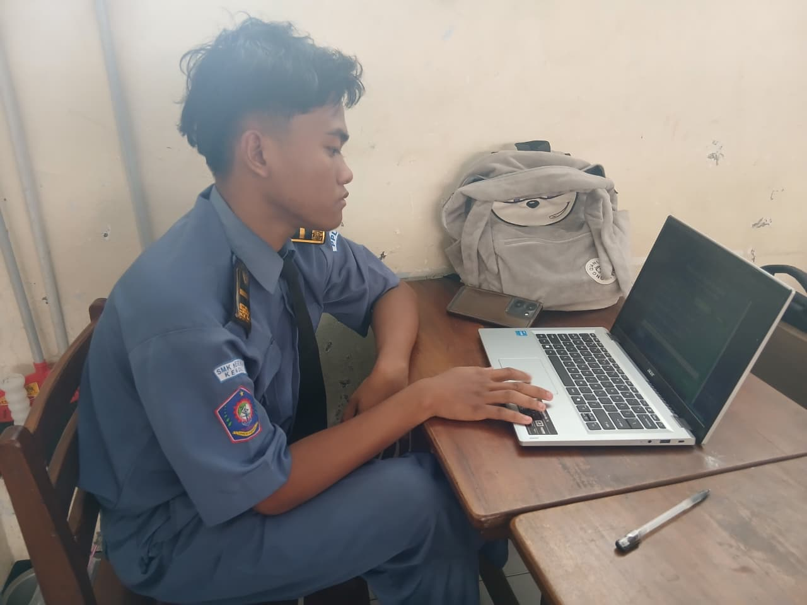
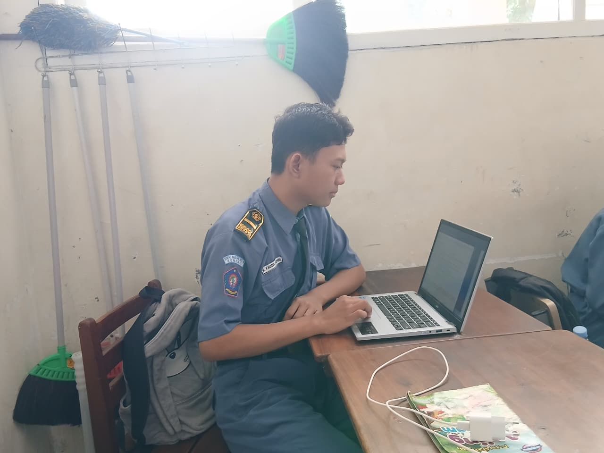
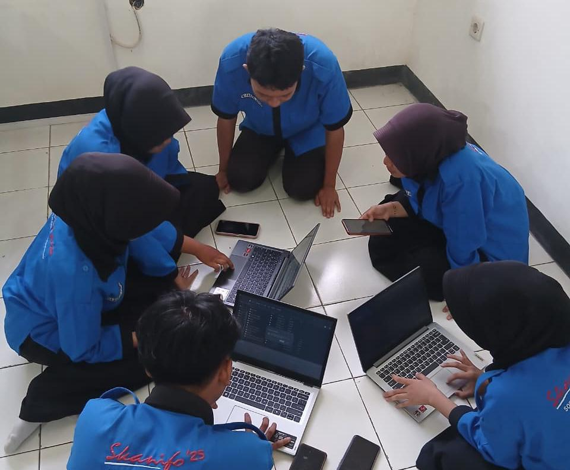

Dalam pembuatan proyek Carboon Footprint Calculator, seluruh anggota kelompok menerapkan nilai-nilai pancasila melalui musyawarah, gotong royong, tanggung jawab, dan kerja sama. Pembagian tugas dilakukan secara adil sesuai kemampuan masing-masing anggota agar proyek dapat diselesaikan dengan baik dan tepat waktu.

| No | Nama Anggota | Pembagian Tugas |
|---|---|---|
| 1 | Destya Inayah | Membuat coding HTML untuk materi PABP, Bahasa Indonesia, Sejarah, Pendidikan Pancasila, Bahasa Inggris, dan Bahasa Jawa. |
| 2 | Dikta Marzuqie N | Membuat coding HTML untuk materi DPK, IPAS, Informatika, Matematika, Seni Budaya, dan PJOK, serta JavaScript. |
| 3 | M Fauzul Adhim | Membuat dan menyusun PowerPoint (PPT) presentasi proyek, serta mencari materi biografi tokoh Lingkungan Hidup. |
| 4 | Jovita Fuji J | Membuat flowchart, mencari materi yang diperlukan untuk website, dan membuat wireframe website. |
| 5 | Santya Satya K | Membuat coding HTML, merancang desain CSS, dan membuat desain Background pada website. |
| 6 | Kayla Marsya'atur R | Mencari dan mengumpulkan materi pendukung proyek. |
Pembagian tugas dilakukan melalui musyawarah dengan mempertimbangkan kemampuan masing-masing anggota. Destya dan Dikta bertanggung jawab pada pembuatan coding untuk mata pelajaran yang telah dibagi,sementara anggota lain mengerjakan bagian presentasi, flowchart, desain website, serta pencarian mater. Pembagian tugas ini dilakukan secara adil dan proporsinoal sehingga seluruh anggota dapat berkontribusi dalam penyelesaian proyek web kalkulator karbon digital.
| Permasalahan | Solusi | Hasil |
|---|---|---|
| Pembagian tugas belum merata pada awal pengerjaan proyek. | Kelompok melakukan musyawarah untuk membagi tugas sesuai kemampuan masing-masing anggota. | Setiap anggota memperoleh tugas yang jelas dan adil. |
| Perbedaan pendapat mengenai tampilan website. | Dilakukan diskusi dan musyawarah hingga tercapai kesepakatan bersama. | Desain website disetujui oleh seluruh anggota kelompok. |
| Kesulitan menggabungkan materi dari berbagai mata pelajaran. | Anggota yang mencari materi berkoordinasi dengan anggota yang membuat website. | Seluruh materi berhasil disusun dan ditampilkan pada website |
Selama proses pembuatan web kalkulator karbon digital, salah satu anggota mengalami kendala pada bagian kode program yang menyebabkan fitur perhitungan tidak dapat berjalan dengan baik. Untuk mengatasi masalah tersebut, anggota lain membantu melakukan pengecekan kode (peer-debugging) secara bersama-sama.
Masing-masing anggota memberikan masukan sesuai bidangnya. Programmer membantu menemukan letak kesalahan sintaks, tester mencoba berbagai kemungkinan penyebab error, sedangkan anggota lain membantu mencari referensi solusi dari sumber belajar yang relevan. Setelah dilakukan diskusi dan perbaikan bersama, error berhasil diperbaiki dan fitur dapat berfungsi dengan baik.
Kegiatan ini menunjukkan adanya gotong royong yang sistematis karena setiap anggota berkontribusi sesuai perannya untuk mencapai tujuan bersama. Kerja sama tersebut membuat proses penyelesaian masalah menjadi lebih cepat, efektif, dan meningkatkan kekompakan tim.






Penyediaan web kalkulator karbon digital merupakan bentuk tanggung jawab sosial warga negara dalam menjaga dan melestarikan lingkungan hidup. Melalui alat ini, masyarakat dapat mengetahui perkiraan jejak karbon yang dihasilkan dari aktivitas sehari-hari sehingga lebih sadar akan dampaknya terhadap lingkungan.
Selain sebagai hak untuk memperoleh informasi mengenai lingkungan yang sehat, penggunaan kalkulator karbon juga mendukung kewajiban warga negara untuk berpartisipasi dalam upaya mengurangi pencemaran dan kerusakan lingkungan. Dengan mengetahui jumlah emisi yang dihasilkan, masyarakat dapat mengambil langkah-langkah yang lebih ramah lingkungan, seperti menghemat energi, mengurangi penggunaan kendaraan bermotor, dan mengelola sampah dengan baik.
Oleh karena itu, pengembangan kalkulator karbon digital tidak hanya bermanfaat sebagai sarana edukasi, tetapi juga menjadi wujud kepedulian dan tanggung jawab sosial dalam mendukung pelestarian lingkungan demi keberlanjutan kehidupan generasi sekarang dan yang akan datang.
Melalui proyek pembuatan web kalkulator karbon digital, saya belajar bahwa teknologi dapat digunakan untuk memberikan manfaat bagi masyarakat dan lingkungan. Sebagai warga negara digital, saya tidak hanya dituntut untuk mampu menggunakan teknologi, tetapi juga bertanggung jawab dalam menciptakan solusi yang bermanfaat bagi banyak orang.
Dalam proses pengerjaan proyek, saya belajar bekerja sama dengan anggota kelompok, menghargai pendapat orang lain, serta menyelesaikan tugas sesuai tanggung jawab yang diberikan. Saya juga memahami pentingnya menggunakan informasi dan teknologi secara bijak, kreatif, dan bertanggung jawab.
Pengalaman ini membuat saya lebih sadar bahwa setiap individu memiliki peran dalam menjaga lingkungan. Dengan memanfaatkan teknologi digital, kita dapat membantu meningkatkan kesadaran masyarakat mengenai emisi karbon dan pentingnya menjaga kelestarian lingkungan. Oleh karena itu, saya akan terus berusaha menjadi warga negara digital yang aktif, bertanggung jawab, dan mampu memberikan kontribusi positif bagi masyarakat serta lingkungan sekitar.